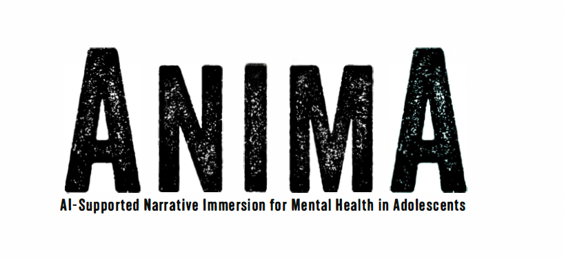
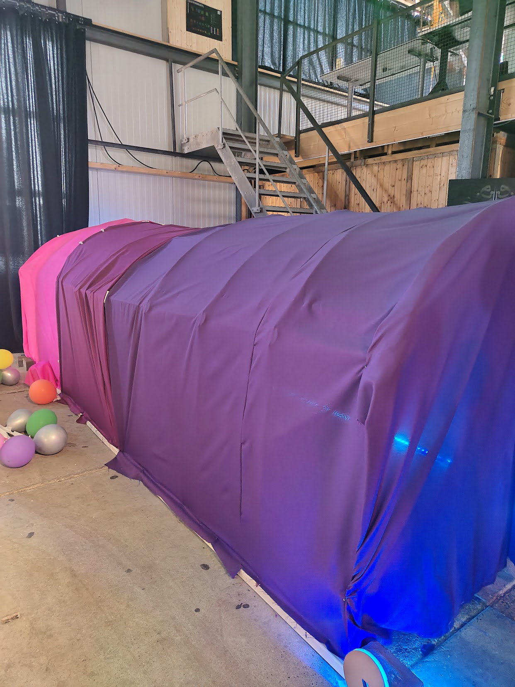
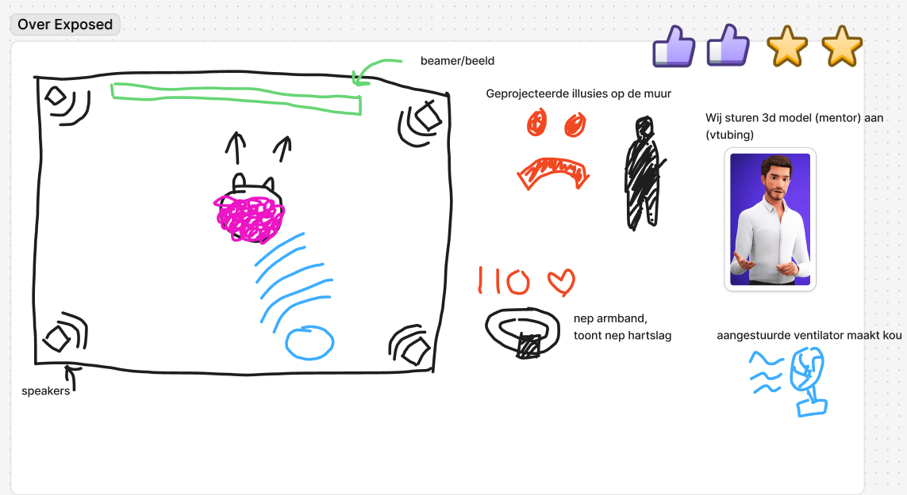
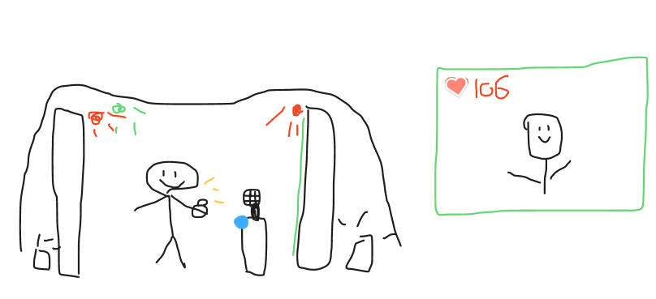
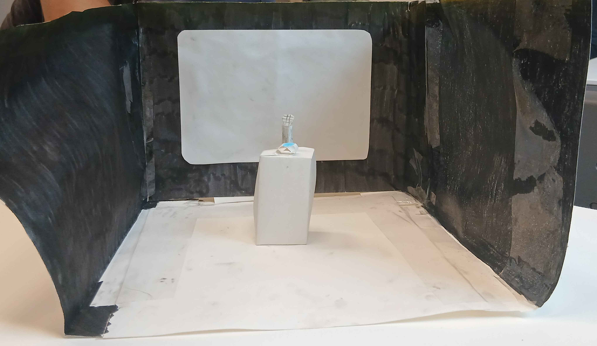
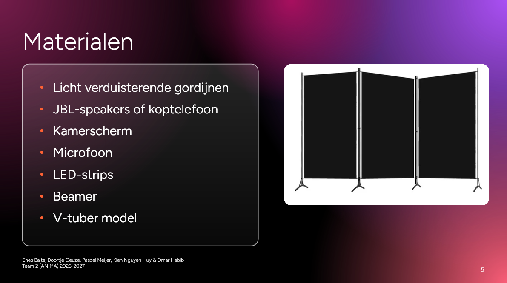
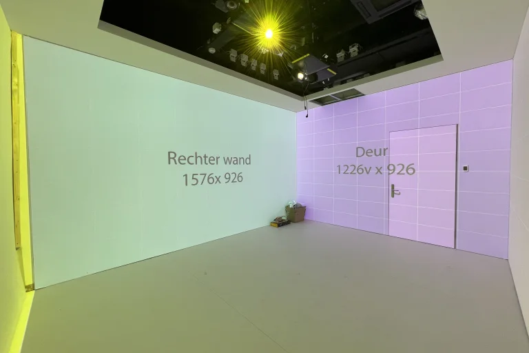

Van eerste gesprekken met de opdrachtgever naar een eerste
immersief concept voor ANIMA.
Creative Technology•Sprint 1
01
Wat is ANIMA?
ANIMA is een project van Barbara. Zij doet onderzoek naar
virtuele AI-oplossingen die studenten met sociale angst
kunnen helpen.
Het idee is dat een student in een virtuele omgeving
exposuretherapie kan uitvoeren, om over hun sociale angsten
heen te komen en meer zelfvertrouwen te krijgen.

02
Mijn rol
Ik ben één van de creative technologists binnen de groep.
Daarnaast ben ik de notulist voor alle gesprekken met de
opdrachtgever.
Aangezien ik een relatief slecht geheugen heb, heb ik deze
rol expliciet aangenomen om ervoor te zorgen dat alle
details van de gesprekken goed genoteerd staan.
03
Het proces
STEP 01
Betere context krijgen
Tijdens het eerste gesprek met de opdrachtgever was het
belangrijk om extra informatie te verzamelen over de
specifieke wensen voor het project.
Hieruit kwam naar voren dat virtual reality door middel
van een game niet haalbaar was. Ik heb specifiek mijn
best gedaan om extra vragen te stellen over het gewenste
prototype.
Uiteindelijk kwam het erop neer dat een fysieke ervaring
waar je in kunt stappen het meest gewenst was. Iets wat
360 graden om je heen gebeurt.
De opdrachtgever had voornamelijk de wens voor een
fysieke en immersieve omgeving. Iets waar letterlijk in
gestapt kan worden.
In het verleden is ook een project gedraaid met hetzelfde
onderwerp. Destijds hadden zij een immersieve tunnel
gebouwd waar je in kon stappen.

Een eerder immersief project rond hetzelfde onderwerp.
STEP 02
Persoonlijke brainstorming
Het doel was om de gebruiker door middel van de
exposure-ervaring zo ongemakkelijk mogelijk te maken.
Hierdoor heb ik nagedacht over welke zintuigen allemaal
gebruikt kunnen worden om de gebruikerservaring te
beïnvloeden. Ik heb onderzocht hoe exposuretherapie kan
falen en ik heb nagedacht over wat horrorattracties doen
om mensen ongemakkelijk te laten voelen.
01
Licht
Invloed op sfeer. Bijvoorbeeld rode verlichting
om een dreigende sfeer te creëren.
02
Ventilator
Kou genereren en daarmee de fysieke ervaring
beïnvloeden.
03
Speakers
Gefluister van achter de gebruiker laten horen.
04
Hartslagmeter
Een neppe, te hoge hartslag tonen om een
disconnect te creëren tussen gevoel en lichaam.
05
Trilling
Bijvoorbeeld een sjaal die letterlijk de
schouders laat trillen.
06
Virtuele mentor
Een VTube-mentor die live bestuurd kan worden
zodat de interactie echt voelt.
07
Fysieke klok
Tijdsdruk creëren tijdens situaties en
tegelijkertijd afleiding veroorzaken.
08
Microfoon
Interactie met de digitale mentor.
Mijn eerste concept
Op basis van deze praktische invloeden heb ik een
omgeving ontworpen om de situatie te visualiseren.

CONCEPT — ONTSPORING
De AI begint te kloten met de hartslagmeting. Je
hartslag is veel hoger dan deze werkelijk is.
De speakers fluisteren innerlijke stemmen zoals
“je bent niet goed genoeg” en “niemand mag je”.
Met de verlichting zie je schaduwen op de muur van
mensen. Vanuit achter je hoor je dat je uitgelachen
wordt. De mentor begint je steeds minder te geloven.
De mentor beschuldigt je ervan dat je de opdracht
niet serieus neemt. De kleur van de kamer wordt
langzaamaan rood.
Je speelt situaties en moet antwoord geven, maar nu
is er een timer met een luide tikkende klok. Elke
keer dat je het fout doet hoor je een “faal”-geluid.
Een ventilator achter je blaast koude lucht op je
rug en benen. De sjaal laat je af en toe schrikken
door te trillen.
Uiteindelijk hebben we als team gestemd welk idee we
het meest interessant vonden. Van elk project hebben
we de meest haalbare en interessante punten gekozen.
Vanuit mijn concept zijn de volgende onderdelen
gekozen:
Virtueel bestuurbare mentor
Neppe hartslagmeter
Beïnvloedbare verlichting
Daarnaast hadden we ook veel overeenkomsten gevonden:
Microfoon als interactie
Beamers
Mentor escaleert in gedrag
Omkapseling door speakers of koptelefoon
TEAMFEEDBACK
“Leuk idee, de uitvoering zou enkel lastig zijn
als we zoveel verschillende hardware-elementen
willen besturen.”
De ventilator en trillende sjaal zijn interessante
ideeën, maar zouden een nachtmerrie kunnen zijn om
te onderhouden.
STEP 04
Ontwerp presenteren aan opdrachtgever
Concept
Uiteindelijk is dit het gezamenlijke concept geworden:

Prototype
Een teamgenoot heeft het volgende prototype gecreëerd:

Materialen
Gezamenlijk hebben we direct nagedacht over welke
materialen we nodig zouden hebben om ons concept tot
een realiteit te maken. Dit is ook een onderdeel dat
we met de opdrachtgever hebben besproken in de hoop op
suggesties en feedback.

STEP 05
Feedback opdrachtgever ontvangen
De opdrachtgever was blij met ons concept. Dit was
precies wat ze zelf voor ogen had.
We kregen de suggestie om gebruik te maken van het
immersive lab in het Benno Premselahuis. Dit is een
ruimte met vier beamers die op de muren kunnen
projecteren.
Over twee weken hebben we een afspraak gepland om te
kijken hoe we gebruik kunnen maken van deze ruimte.

04
Reflectie
Wat heb ik geleerd?
Ik heb eigenlijk geleerd hoe ik snel een sketch-prototype
in elkaar zet. Normaal doe ik veel langer over het
creëren van concepten.
Maar voor dit project was het juist belangrijk om direct
op gevoel te gaan en te bedenken wat het meest
ongemakkelijke concept zou kunnen zijn. Op basis hiervan
hebben we uiteindelijk een interessant gezamenlijk
concept gecreëerd.
Wat zou ik anders doen?
Tot nu toe is er nog niets wat ik anders zou aanpassen.
De communicatie binnen het team was goed, we werkten
prettig samen en iedereen heeft een bijdrage geleverd
aan het concept en prototype.
Ook het contact met de opdrachtgever verliep goed en we
kregen duidelijke feedback op ons concept.
Op basis van deze eerste sprint zie ik daarom op dit
moment geen grote veranderingen die ik in een volgende
sprint anders zou aanpakken.